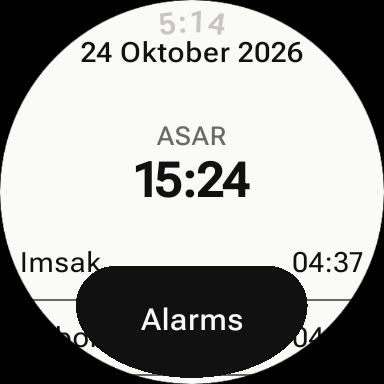

Prayer times and azan alarms for Brunei Darussalam — on your Android
phone and your Wear OS watch.

What it is
Brunei Azan shows today's prayer schedule — Imsak, Suboh, Syuruk, Doha,
Zohor, Asar, Maghrib and Isyak — with the Hijri date and qibla bearing.
Times come from waktu.co.bn, the official
schedule published by Pusat Da'wah Islamiah, Kementerian Hal Ehwal Ugama
(Ministry of Religious Affairs), and cover all four districts:
Brunei-Muara, Tutong, Belait and Temburong.
How it works
Pick your district. No GPS, no account — just choose
Brunei-Muara, Tutong, Belait or Temburong.
See today at a glance. The full schedule, with the
next prayer highlighted.
Set azan alarms. Toggle an alarm per prayer (azan
sound or beep, with optional vibration), or add your own custom alarms.
Alarms keep working after a reboot.
Wear it. The watch app is standalone — it fetches
prayer times over its own connection and works without the phone. It
includes a watch face, a "next prayer" complication for other watch
faces, and a prayer-times tile.
Stay in sync. When paired, your settings sync
between phone and watch automatically.
Privacy
No accounts, no analytics, no ads. The only network call the app makes
is to waktu.co.bn to fetch prayer times.
Read the privacy policy.